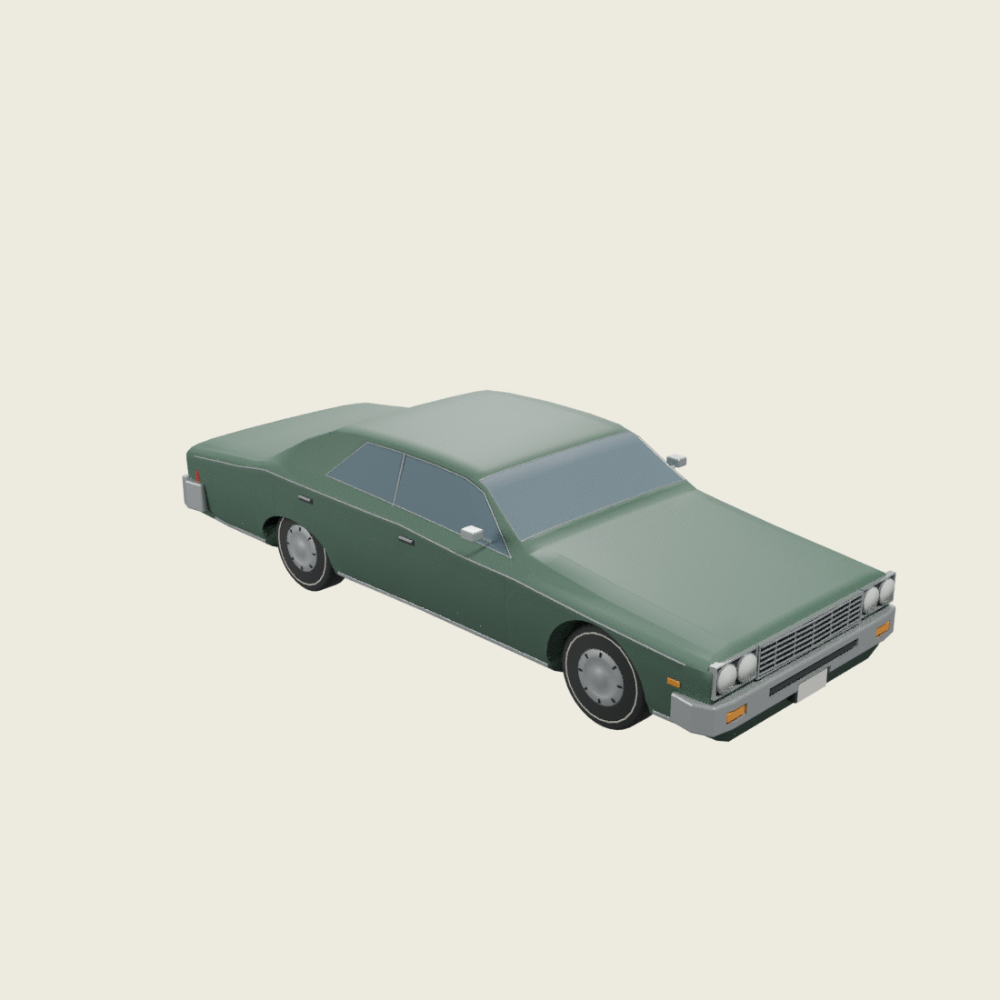
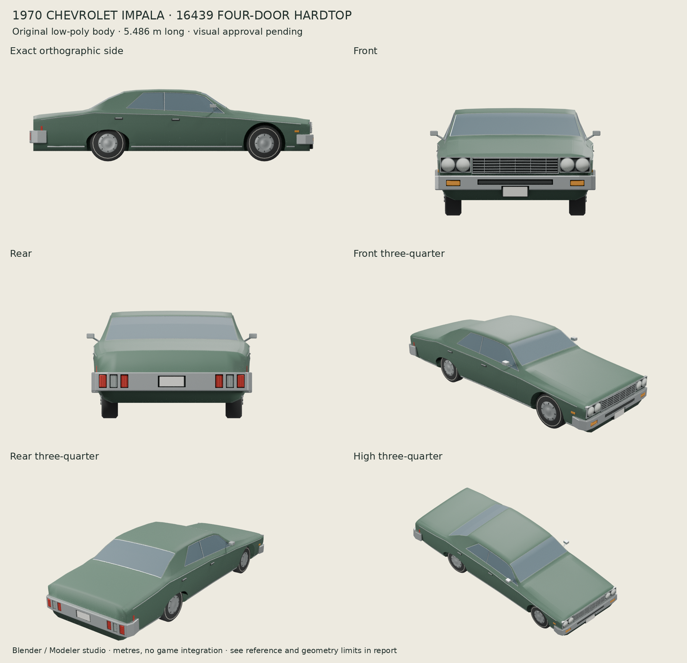
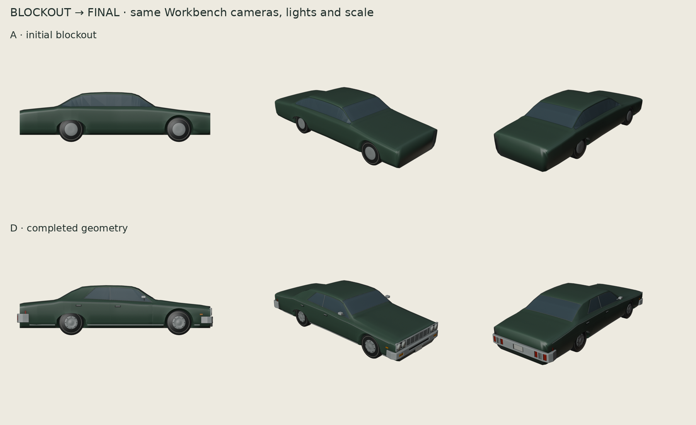
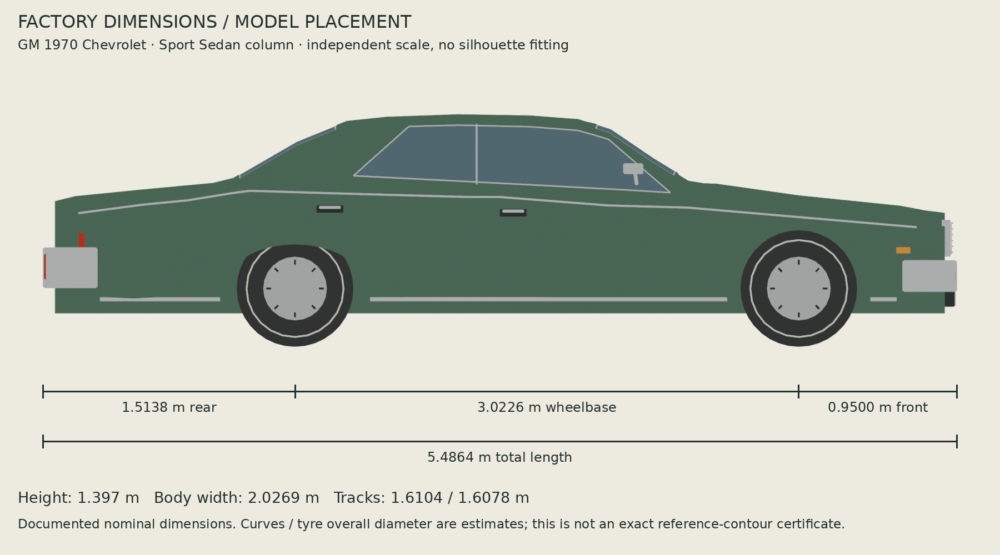
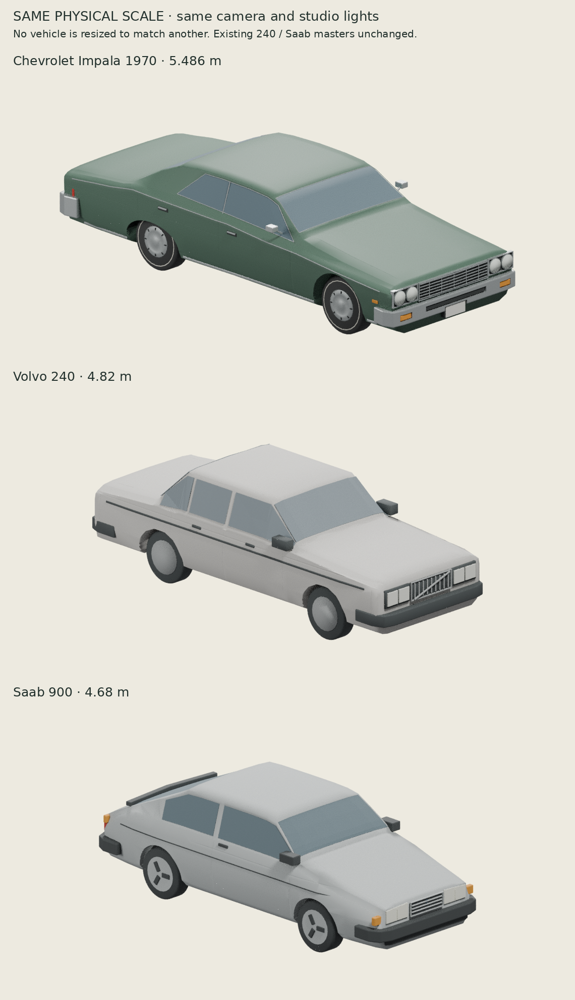
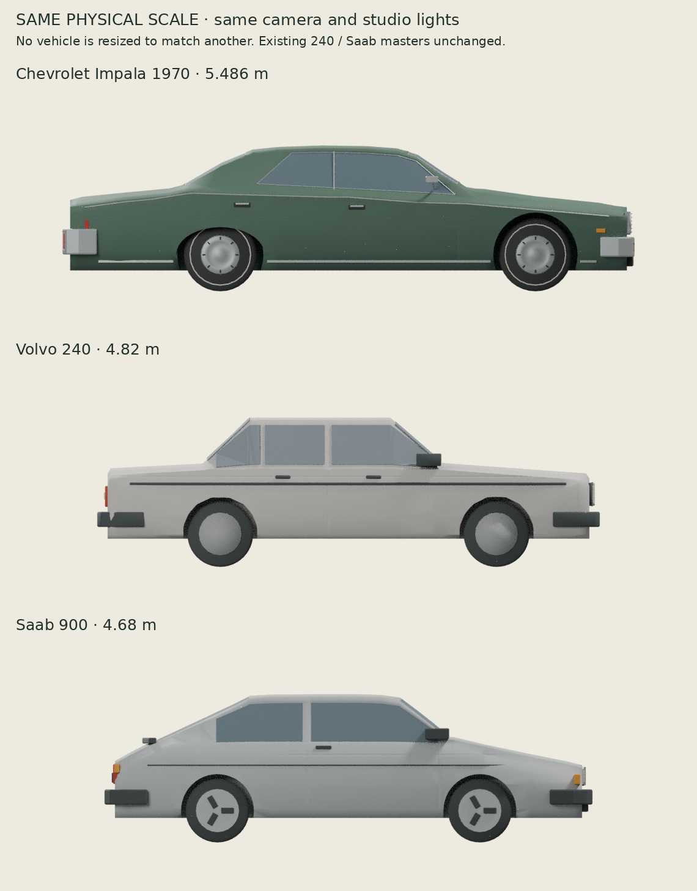
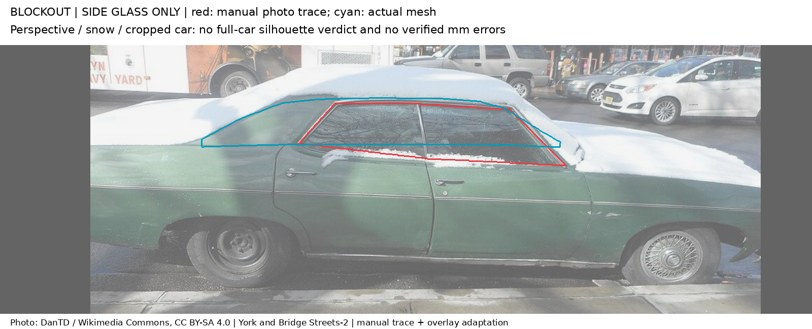
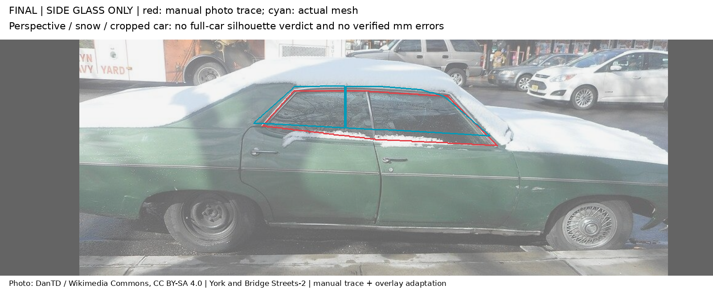
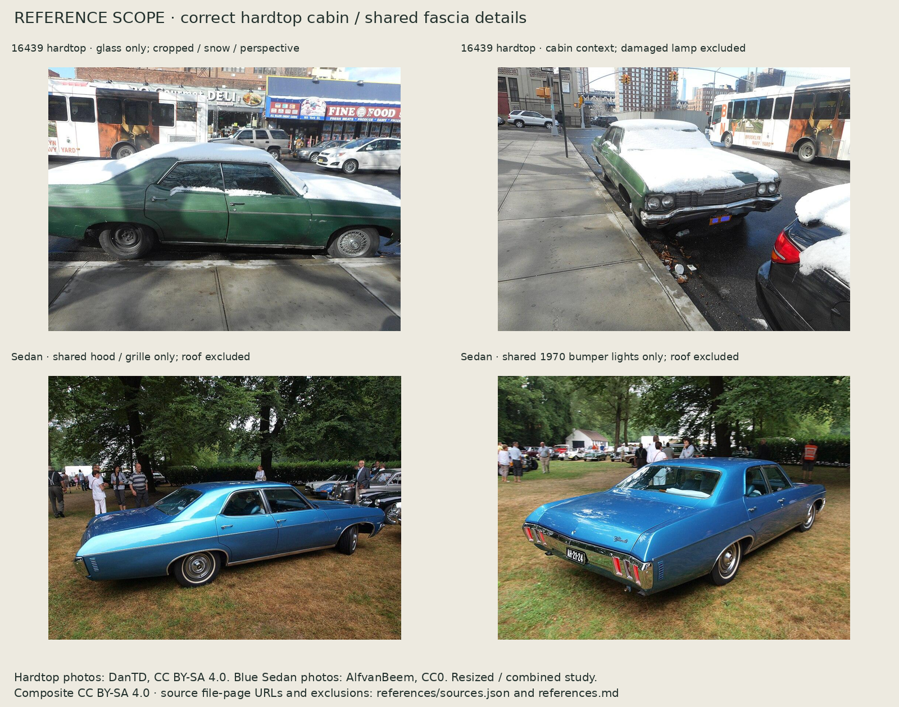

Chevrolet Impala.
Four doors. No centre pillar.
1970 Impala 16439 Sport Sedan: a long, low American hardtop, built in the established Blender pipeline. Factory dimensions, connected steel geometry and restrained period details. Ready for visual review before game integration.

Actual headless Blender render. Tap any image to inspect its full-resolution PNG. All work executed in Codex; no local setup required.
Six views, one model



Geometry developed in stages
Pointed blockout glass became proper hardtop trapezoids with separate front/rear panes and slim meeting sashes. Hood and fender relief, supported body reveals and recessed bumper fittings add definition. Rocker chrome stops at the wheel openings. Both rows below use the same clay renderer, cameras and physical framing.

Full-size proportions

Compare with our current Volvo 240 and Saab 900
Identical camera, bounds, studio lights and pixel scale for every car. No independent fit-to-frame scaling. Existing masters are unchanged.


Reference scope, without a false silhouette pass
GM identifies the correct variant as 16439 Sport Sedan. The primary 1970 brochure, pages 16–17, shows its pillarless greenhouse and characteristic front. Factory dimensions constrain the model. Photos of the ordinary Sedan supply shared fascia details only.
The available hardtop side photo is cropped and covered in snow. It cannot verify the whole exterior silhouette. The numerical overlay below compares visible side glass only, registered by wheel centres and ground. It is a perspective estimate, not exact millimetre approval or full-car IoU.
Blockout aperture


Refined aperture


Glass-only IoU: 0.514 → 0.705. Mean contour distance: 31.34 → 13.79 canonical pixels. The remaining mismatch is visible; it has not been labelled a full-car geometry pass.
Photographic reference scope and credits

Hardtop: DanTD, CC BY-SA 4.0. Shared fascia photos: AlfvanBeem, CC0. Reference-only; no photograph textures in the vehicle. Exact source file pages, licences and exclusions.
Verified export, explicit limits
| Check | Result |
|---|---|
| Triangles / mesh primitives / materials | 19,604 / 27 / 12 · zero textures |
| Body | One closed connected shell; positive volume; zero open edges, bad winding, degenerates or BVH self-intersection candidates |
| Glass and tyres | Six closed panes; zero measured glass/body or tyre/body surface intersections |
| Scale and orientation | 5.4864 m long · 3.0226 m wheelbase · GLB Y-up, −Z forward |
| Actual GLB | Strict validator, Blender reimport, Three r128 loader, hub pose and independent colour tests pass |
| Reproduction | Fresh source build matches all 27 meshes within 1 µm |
Remaining simplifications: restrained grille/bumper centre V, estimated section curves, simplified wheel covers and lens optics, no script badges or plate lettering, opaque glass and no interior. Physical iPad/Safari GPU speed and in-game driving were not tested.